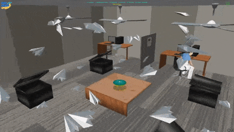

"Project: Outbreak" a game that is being developed by Indie-Shark Games. I am the project lead, my focus on this project is game mechanics and project planning. Currently, this project is paused as the team members complete their final year at university.

The Grads in Games Search For A Star competition features different areas of games development. There are 2 tests of skill for programmers: Project Development using an exisiting code base and a C++ coding test.

A project with a focus on creating a virtual desktop rythym game influenced by the study of AR and VR systems. Utilises openCV techniques in Python and ports webcam inputs to Unity for gameplay usage.

A project completely built using DirectX 11. It implements common game engine features such as Mesh/Box Picking, Sphere/Box Collision, Matrix manipulation, Frustum Culling, Rendering to Texture and Reflection.

Developed in Unreal Engine, the primary focus in this car racing game was to create competant AI racers for the player to compete against. The AI navigate using waypoints and steering service.

An AI pathfinding project. Developed in OGRE (Open Source Graphics Render Engine) this application demonstrates A* pathfinding across different terrain. The documentation also evaluates the use of A*.